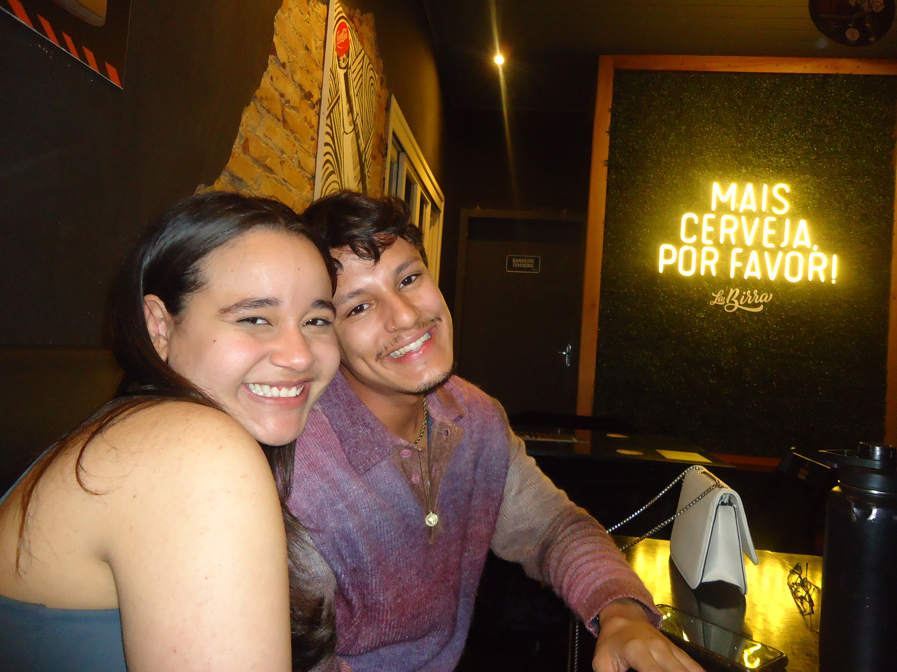
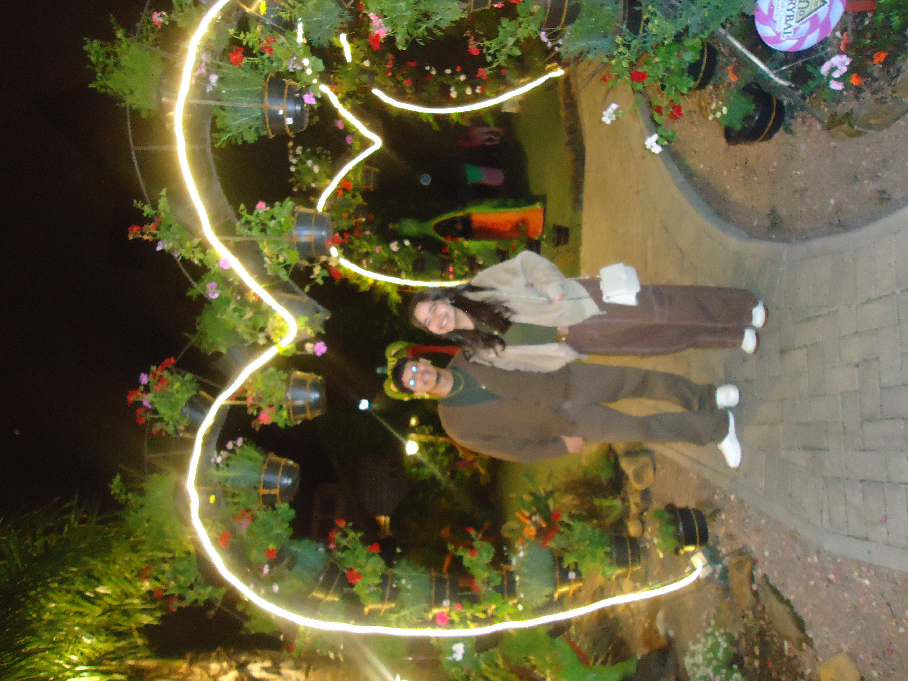

31 de 47 pontos líquidos
"Basicamente a mesma pessoa" — com o tempero certo nas diferenças!
Vocês concordaram de cara em 30 perguntas (incluindo gostar de gatos, praia, viajar de carro para destinos novos, dormir no mesmo horário, maximalismo, cores vivas e até beijar no primeiro encontro!). Somando o "tanto faz" do hambúrguer e o encaixe perfeito onde o Vilton toma o primeiro passo e a Bia espera a iniciativa, são 32 matches!
30 iguais + 1 flexível + 1 oposto complementar
Equilíbrio (doce x salgado, plano x espontâneo)
Bia não respondeu a #38 (balada x dança lenta)
👯♀️ Almas Gêmeas em:
Areia, animais & gatos, dividir comida, desenhos animados, teletransporte, jogos de tabuleiro, jardim botânico, oceano, chocolate branco, cozinhar, praia, viagem de carro, cidade, destinos novos, relaxamento, calor, maximalismo, franja, cores vivas e constante evolução!
⚡ Onde se Completam:
Iniciativa perfeita: Vilton toma o primeiro passo e Bia espera! Além disso, ele é do salgado e ela do doce (zero briga pela sobremesa), ele traz o planejamento e ela a espontaneidade, ele flerta com palavras e ela com o toque.
Química na prática: Bia & Vilton
Clique em qualquer foto para ampliar • Caminhos configurados para ./assets/ no GitHub

Foto 1: ./assets/DSC06341.JPG
Ao subir a pasta assets/ no GitHub, esta foto aparecerá automaticamente aqui.
"Mais cerveja, por favor!" 🍻✨
la Birra • DSC06341.JPG

Foto 2: ./assets/DSC06452.JPG
Ao subir a pasta assets/ no GitHub, esta foto aparecerá automaticamente aqui.
"Arco de coração & flores" 💘🌿
Floribal • DSC06452.JPG
Gabarito Completo: Vilton vs. Bia
Compare linha por linha todas as 47 perguntas respondidas.
Nenhuma pergunta encontrada com esse filtro.